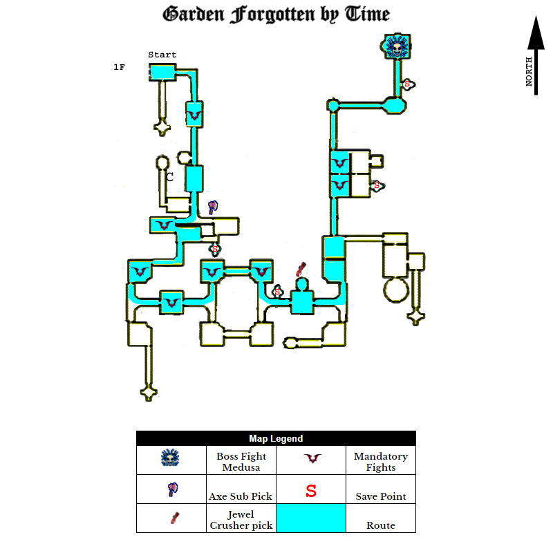
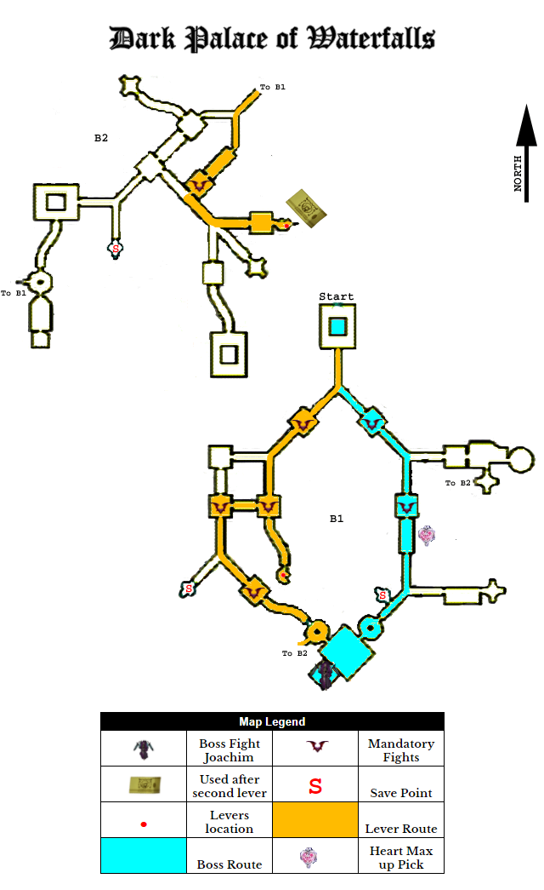
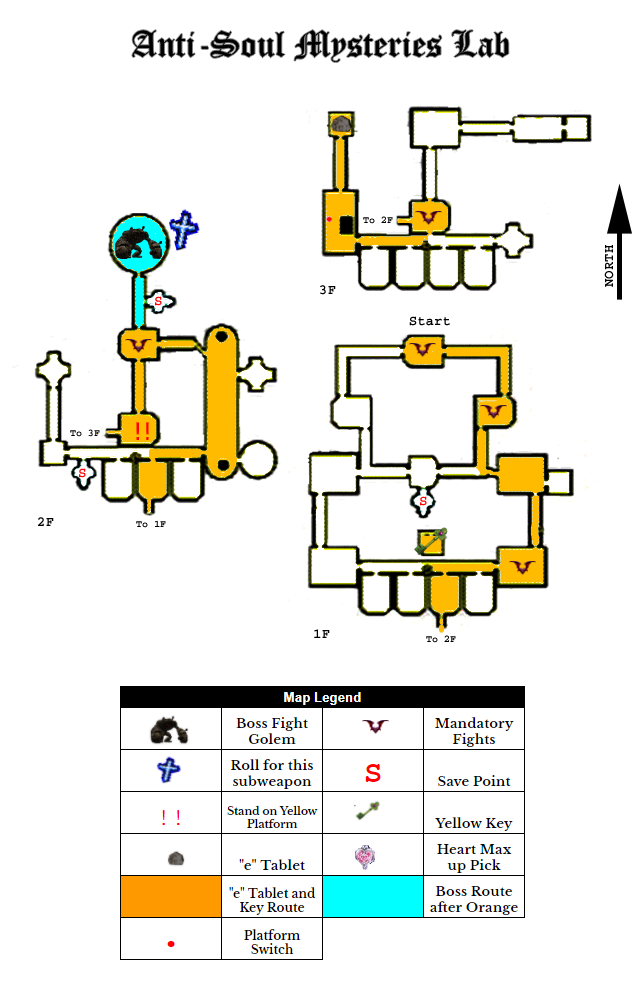
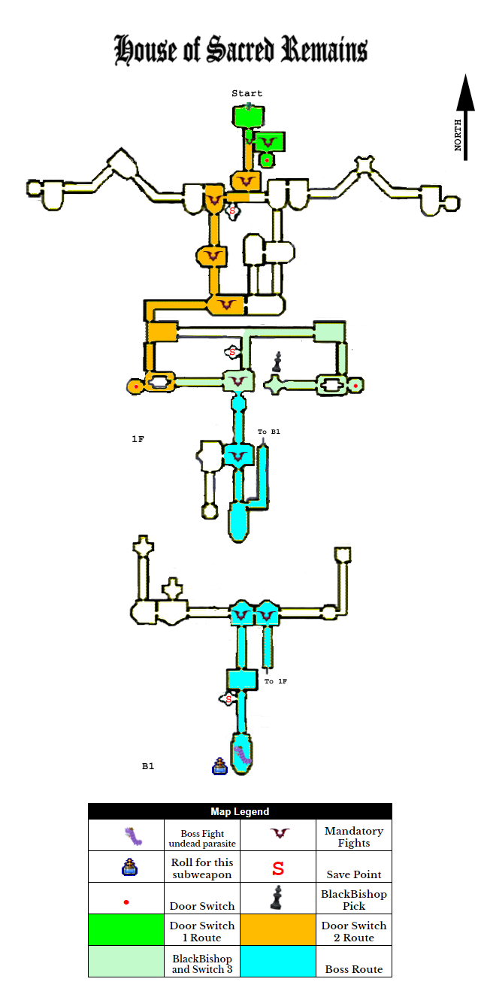
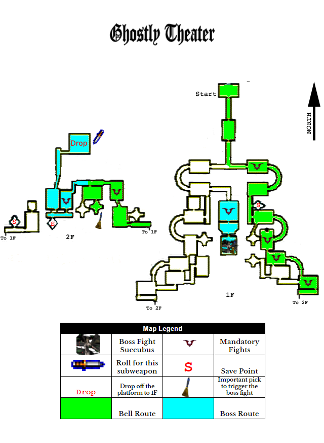
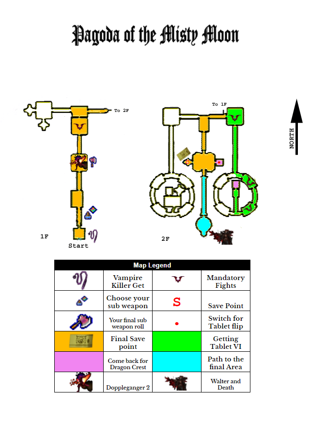

Leon Any% Run Breakdown
I. Preface
This run is brokedown room by room - battle rooms since hallways are pretty self-explanatory. Basic Map reference of where to go will be included. If you are looking for an ideal time then you’d have achieve 35:xx IGT and If you are interested in strong RTA time run this on PS3
Castlevania: Lament of Innocence goes by In Game Time'' instead of the usual RTA for speedruns. This is because In Game Time pauses any time the game is loading, which allows runners to play on any platform they have access to (PS3 and Emulator players have a non-trivial advantage in terms of load times, which going by IGT eliminates). RTA is decent as a ballpark figure for determining whether a run is ahead or behind. DragonDarchSDA 2020
II. Prelude to the Dark Abyss
- Tutorial Room 1 - Jumping to the left off of the platform saves a few frames. Pick up Potion
- Tutorial Room 2 - Serum is no longer needed skip it
- Tutorial Room 3 - △ , ▢, △ Kill the first skeleton with ▢, ▢, △ Then △ delay △ , △ for the other two skeletons if they don’t line up otherwise ,,
- Tutorial Room 4 - Magical Ticket is necessary for money.
- Tutorial Room 5 - The Svarog Statue is mandatory, you can’t kill the golden knight with any other regular attack. It can also cost you time by choosing not to attack as soon as possible. There's nothing you can do about it either.
- West Hallway - Use this Dupe Point because it's slightly faster than using the one in the east hallway.
- East Hallway - You will need to get used with pre-selecting items, so you don't waste time switching to it later
- Save Room - You will need this save as your warp point for Memorial Tickets. Unfortunately there's no way to activate it without actually saving.
- Shopping 1 - Sell everything but 1 Magical Ticket ($1,700), and Buy 2 Memorial Tickets ($1,600)
- Shopping 2 - Sell 7 Memorial Tickets ($2,800) 7 Magical Ticket ($700) and Buy 1 Ruby ($3,000).
- East Hallway - Try to not dupe Magical Ticket so you won't have to sell it to get it out of your inventory. You can avoid duping the first item by hitting up or down fast enough after entering the item menu.
- Shopping 3 - Sell 8 Ruby ($12,500) and 4 Memorial Tickets ($14,100), then Buy 1 Diamond ($10,000), 1 Sapphire ($2,000), 1 Turquoise($800) and the Jade Mask ($999).
- You need to beat the game once in order to have access for the Jade Mask
- East Hallway - Make sure you have 9 of everything while reorganising your items. Every runner has a different setup. Find a way which is easier for you to access. Equip the Jade Mask as you exit the hallway or before you jump into Garden Forgotten by time.
III. Garden Forgotten by Time
The switch between Assassin’s necklace and Jade Mask is the hot-topic of this run. Evil Stabbers has a chance of dropping the necklace (which is very low). This necklace Enables Leon to use critical attacks. Critical hit for more damage than normal attacks, but the issue is that it's a chance not 100% guaranteed. Another thing to take into consideration is the switch between Jade Mask and Assassin's Necklace before and after boss fights. There is no final result whether it's really worth having this accessory in the run or not.

- L-Hallway - Run through candles to get some Hearts. Jade Mask is convenient, especially later on when you can line up Hi-Speed Edges without worrying about candles getting your my way
- Skeleton Room - Similar case as tutorial room 3 skeletons. The goal here is to not get spreaded out spawn
- T-Hallway - Axe is important. Get that yellow candle
- Evil Stabber Room - Optimally you want the Evil Stabber to spawn just as Leon gets near him. In addition you don't want it to fall over from your attacks.
- Gargoyle Room - That first Gargoyle doesn't always come down that fast. You want both Gargoyles to go down with that first Axe, but it's pretty much luck. 3rd Gargoyle you’d want to pray for the immediate swoop, which helps you to determine when to throw the axe.
- Axe Armor / Evil Stabber Room - You’d want Axe Armor to line up so you can there were no lines of 3 or more. Note that you can only have one Axe out at a time. If you're aware that it's going to take a while for it to hit the wall, you'll do a Flame Kick after a whip combo to give it enough time to disappear. Evil Stabbers are a similar case as the last room that you encountered one except you are dealing with two this time.
- Evil Stabber / Skeleton Soldier Room - Align yourself to throw the first axe that should kill 2 Skeleton Soldiers. The last skeleton should die during your evil stabber cycle.
- Gargoyle / Skeleton Archer Room - Get close to Skeleton Archer then throw axe at Gargoyle.The Svarog Statue takes care of the rest. If they start being dodgy, whip or throw more axes.
- Man-Eating Plant Room - The Axe has to double hit to get it to open immediately like that. The angle for the throw is pretty forgiving though.
- Jewel Crush - The core of this run.
- Skeleton Flower / Gargoyle Room - 1 Ruby then 1 Sapphire should do the trick. The Flower can be trolly by not coming low enough to be hit by the Sapphire.
- Skeleton Flower / Buckbaird / Poison Lizard Room - Use the Ruby to clear out the Buckbairds, then throw the Axe to finish off the Flower. If trolled with its slam dig then use Sapphire. Use diamond before the lizard spawn or any extra items to get rid from your inventory. Once they are in use Sapphire and Ruby. Do the same thing for the last wave as well
IV. Dark Palace of Waterfalls

- Fish Man / Skeleton Swordsman Room - There's 5 of each enemy here, but only 2 can be spawned at a time.
- If you rolled Turquoise before this room - Use Michael's Sword on Fish Man to make the next one spawn early. Use 2x Sapphire on two skeleton spawn. Use another Michael’s Sword on Fish Man before you proceed to 2x Sapphire another two skeleton spawn. Occasionally there is one last skeleton remaining to spawn. Use a ruby to finish it off.
- If you want to get Cross on this room which costs no time but is risky - Throw one tornado axe to kill Fish Man spam Turquoise before two skeletons spawned for double Sapphire. If you still didn’t get the cross, again spam Turquoise before two skeletons spawned for double Sapphire. You might be forced to whip fish men before the last skeleton for ruby.
- Fish Man / Frost Sword Room - 1 Ruby finishes everything off, provided you wait long enough for the Swords to all spawn.
- Bridge's lever - To do the text dialogue skip: ▢ x5 two times then ▢ x3 Action cancel to the door. Wait for the screen to shake before you get out of this room.
- Flea Man Room - The first one gets Sapphire. After that it's luck. If the second wave has 6 flea men on screen then you can finish the rest with ruby. So 2x Sapphire then 1x Ruby.
- Heavy Armor / Skeleton Soldier / Vassago Room - The Skeleton Soldiers die to a Ruby, then 2 Sapphires finish off the Heavy Armor. The Vassagos get more Rubies. You can damage the Vassagos the moment you can see them, so there's no need to wait until they fully spawn.
- Merman / Armor Knight Room - 2 Rubies here. Since you'll be able to dupe again right after this.
- Waterfall Switch - Memorial Ticket out of here, skipping Doppelganger completely. Normally you have to fight him, then take the elevator back upstairs, which is a huge time waster. To do the text dialogue skip: make sure you pre-select the ticket. ▢ x3 then ▢ x5 two times. Immediately Memorial Ticket the moment the last extension is finished.
- Frost Demon / Frost Sword Room - Use Michael's Sword to damage the Frost Demon since it's weak to it then use 1 Ruby.
- Merman / Fish Man Room - 1 Ruby will kill all the Fish Men, but the Merman will have 1 HP left, which is why you whip it once first.
- Pendulum Room - The Heart Max UP is necessary for later. The blades behaviour are random.
V. Anti-Soul Mysteries Lab

- Portal Room - 2x Sapphire against 2 Skeletons. You need to conserve Ruby in this area.
- Hallways - The High Speed Edge starts here.your movement speed is increased considerably.
- Flame Zombie / Ghost Knight Room - You’d only 2x Sapphire, but sometimes the spawn can be unfavourable 4 if worst case scenario.
- Axe Armor / Ghost Knight Room - Hi-Speed Edge through the Axe Armors to deal some initial damage then. use 2x Sapphire to deal with the first wave of Ghost Knights, then a Ruby for the second wave since that allows you to start heading for the door.
- Yellow Dragon Key - Pick this up for use in the House of Sacred Remains.
- Astral Warrior Room - You’d have to wait before using a Ruby here since they don't all spawn at the same time.
- Red Ogre Room - Axe Tornado deals with him nicely.
- Turquoise for Cross before you trigger the boss.
VI. House of Sacred Remains
This used to be the first area you do before the recent optimization, but instead you are doing it fourth. Also, this is the area that requires that you pick up that Heart Max UP in Dark palace, since otherwise you wouldn't have enough Hearts to make it all the way through. Diamonds may refill you to full, but this area is heavy on the hallways, some being quite long, so it taxes your Hearts.

- Entry Hallway - 2x Sapphires to deal with the Skeletons since it's faster than whipping and more reliable than using an Axe.
- Skeleton / Skeleton Archer Room - 2x use Sapphires here to the first Skeleton's wave. use the Svarog Statue against the second Skeleton Archer so you can be as close to the door as possible when Sapphiring the last two Skeletons.
- Zombie Room - Use Spiral Axe here to conserve Rubies / Sapphires, since those are taxed alongside Diamonds in this area. The only issue you’d ever have in this room is if the Zombie spawn in bad positions causing Spiral Axe to not take all 3 out in one use.
- Skeleton Swordsman / Rune Spirit Room - One Ruby. Six dead undead minions.
- Skeleton Knight / Zombie Room - You likely run low on hearts here so pop a Diamond here since you have to wait for the Skeleton Knights to spawn. Use your last 2 Sapphires once again to conserve Rubies.
- Zombie / Rune Spirit Room - Another Ruby. Another 6 dead undead minions.
- Skeleton Knight / Skeleton Archer Room - 2 Rubies :)
- Creepy Red Floor Room - Trying to Hi-Speed Edge through here usually causes you to take hits.
- Black Bishop - The best Relic, bar none. This was the sole reason for taking the small detour to get the Yellow Dragon Key. It increases your STR and INT by 50% while active. This Relic is what allows you to get some quick kills on bosses.
- Creepy Red Floor Room Part 2 - That Hi-Speed Edge is luck based. You can get hit before you can jump over the pillar sometimes.
- Use the Diamond in the Switch Door Room, since using it in the Heavy Armor Hallway usually leads to me flying across the room.
- Vassago / Zombie Room - Use Spiral Axe to take out at least one-two Zombies as soon as you enter. The reasoning for this is that there's a total of 5 Vassagos and 7 Zombies that spawn in here, but only 3 of each can be spawned at a time. If you Ruby the first group down, then Ruby the second group down, there will be a lone Zombie left at the end. This is just a slightly faster way of dealing with that lone Zombie.
- Astral Fighter / Vassago Room - 2 Rubies do the trick here, but you need to delay the second one since the Astral Fighters need time to spawn. You also switch to the Purple Orb for the next room while you are waiting.
- Executioner / Vassago Room - Axe Tornado while under Black Bishop is the best way to deal with the Executioner. The Vassagos can be downed in 2 whips each so long as Black Bishop is still up.
- Turquoise for Holy Water before you enter the boss room.
VI. Ghostly Theatre

- Skeleton Warrior / Ghost Room - The Skeleton Warriors can't be killed in one Ruby, since they have to rematerialize before the last of their HP can be depleted. Pop the Ruby immediately to get them to start rematerializing, then pop a Sapphire in between the first and second one to kill them both off. The third one gets Hi-Speed Edge through.
- Statue Room - You have to be quick, and have good aim with Hi-Speed Edge to pull 2 meteor cycles. The 4x Sapphire use while waiting for the door to open was intentional, since you have one to spare in this area, and don't need them after Ghostly Theatre at all.
- Skeleton Warrior / Ghost Soldier Room - Ruby immediately, then Sapphire the one in back. Hi-Speed Edge the other one.
- Skeleton Warrior / Spirit Room - Ruby immediately again, then Sapphire in between the two of them.
- Armor Knight / Astral Knight Room - There's 8 Astral Knights in here, but only 3 can be spawned at a time, and you can only spare 2 Rubies in here. So you start off by Hi-Speed Edging cose to the camera to try and get a better field of view, then make sure at least 2 Astral Knights are on screen so I can Sapphire them.
- Axe Armor / Spirit Room - There's 2 waves of Spirits here, and a lone Axe Armor. You need the Black Bishop active to take down the Axe Armor in one Ruby.
- Axe Knight / Buckbaird Room - You need Black Bishop Active to do enough Damage to the Axe Knight to be able to finish him off in one Ruby and one Hi-Speed Edge. In addition you have to wait before using the Ruby since the Buckbairds don't spawn immediately.
- Creepy Red Floor Room - Trying to Hi-Speed Edge through here usually causes you to take hits.
- Roll for the knife as you enter Cyclops / Red Ogre Room.
- Cyclops / Red Ogre Room - The Axe isn't worth using here, since there's no way to hit both of them with it, and the strongest move the Axe has is Hi-Speed Edge, which is a pain to aim AND does less damage than Force Cannon. Hit both of them for 225 damage, enabling one Black Bishop powered Force Cannon to kill each one.
VII. Pagoda of the Misty Moon

- After you take care of Doppelganger, get back the axe
- Phantom Room - I mistake them with Mirage Skeleton sometimes. The Phantoms take 3 Rubies with Black Bishop active. There's certain attacks they do, though, that make them invincible. Sometimes they'll do those while I'm trying to Ruby them down, costing you both time and Rubies.
- Laser Room - Darch found a neat little shortcut. You have to wait a split second before moving left, or the laser will hit you. The angle isn't that strict, but it's still not easy to hit every time.
- Candle Room - You have a very small window where you can act before the short cutscene here. Use it to Hi-Speed Edge, which finishes its animation while the cutscene is playing.
- Save Room - You need this save here so you can use Memorial Ticket back after obtaining the VI Tablet, and the Dragon Crest.
- Phantom / Lizard Knight Room - 3 Rubies with Black Bishop again. Same issue with the Phantom as the last room. Lizard Knights aren't a problem at all though.
- Long Hallway - Restock your Rubies here if you feel that you're running low.
- Spartacus Room - 2 Rubies with Black Bishop.
- Dullahan Room - 2 Rubies with Black Bishop FTW.
- When your on the way for Dragon Crest before the Tablet room dupe one last time.